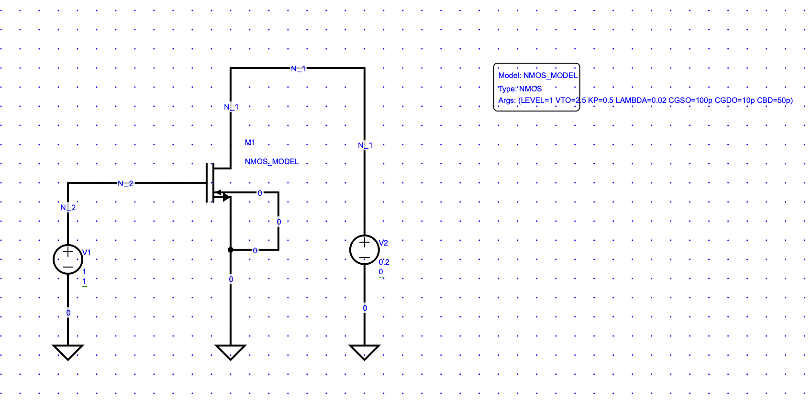
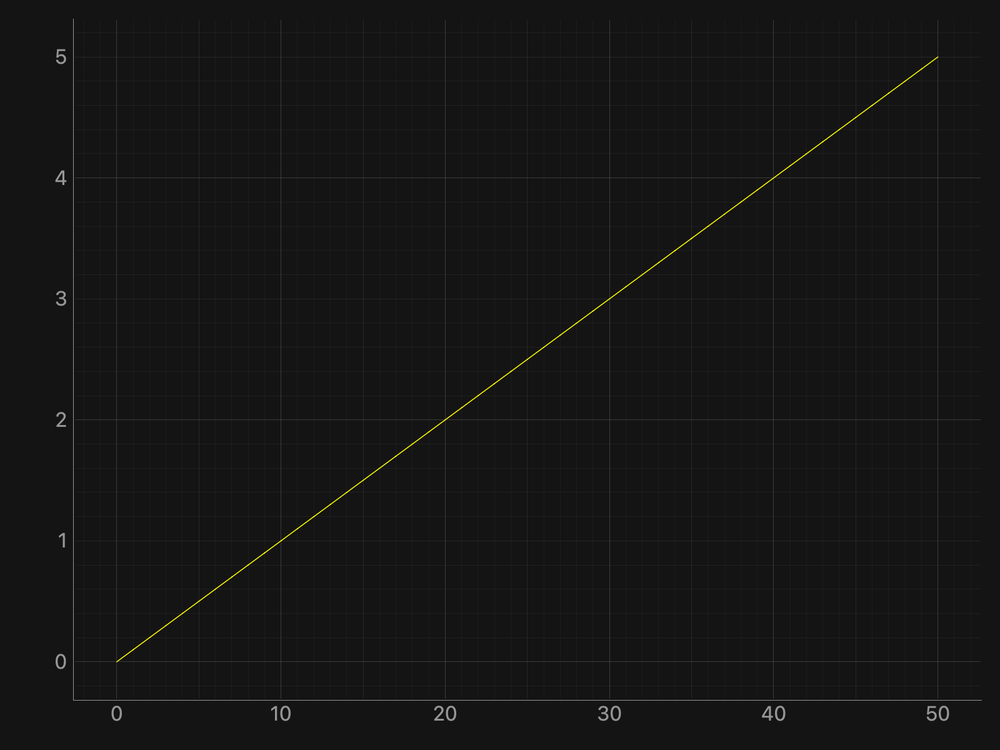
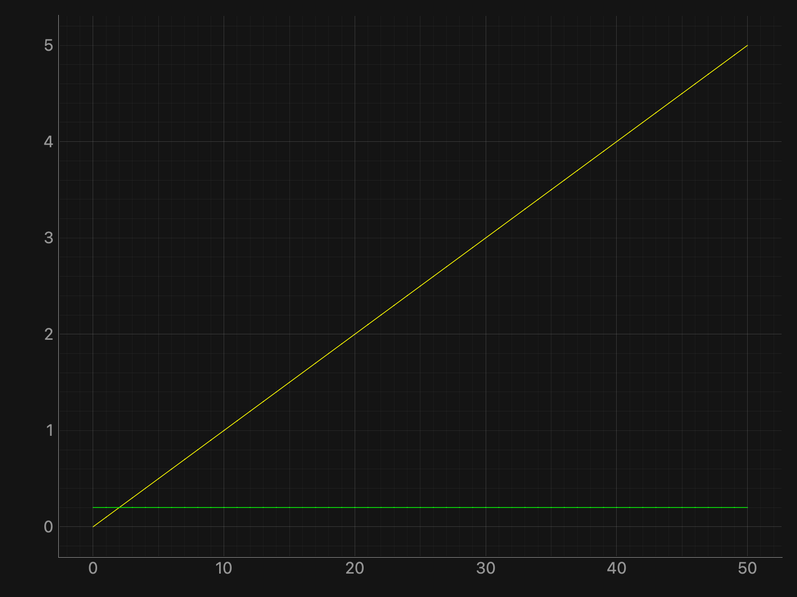
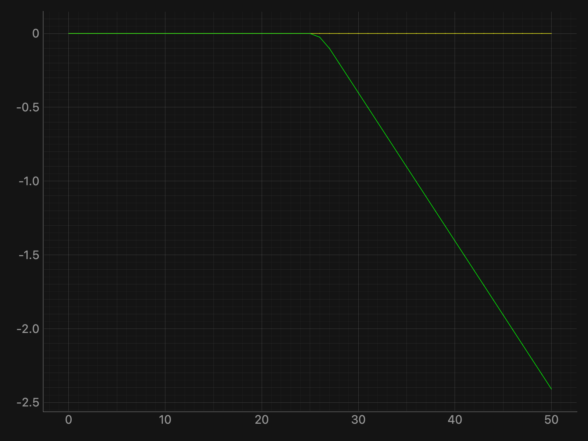

Simulation Report: dc_sim.svg
Table of Contents
1. Top-Level Schematic

2. Output Expressions
| Name | Expression | Unit | Min | Value | Max |
|---|---|---|---|---|---|
| plotA | showplot(sdc('N_2'), label="sdc('N_2')") |
— | |||
| plotB | showplot(sdc('N_2'), label="sdc('N_2')")
plot(sdc('N_1'), label="sdc('N_1')") |
— | |||
| plotC | showplot(sdc('V1#branch'), label="sdc('V1#branch')")
plot(sdc('V2#branch'), label="sdc('V2#branch')") |
— | |||
| scalar_at_0_and_plots | showplot(sdc('V1#branch'), label="sdc('V1#branch')")
plot(sdc('V2#branch'), label="sdc('V2#branch')")
value(sdc('sweep'), sdc('N_1'), at=0) |
V | 200m | ||
| just_scalar | showvalue(sdc('sweep'), sdc('N_1'), at=0.5) |
V | 200m | 5 |
3. Waveform Plots
plotA
plot(sdc('N_2'), label="sdc('N_2')")

plotB
plot(sdc('N_2'), label="sdc('N_2')")
plot(sdc('N_1'), label="sdc('N_1')")

plotC
plot(sdc('V1#branch'), label="sdc('V1#branch')")
plot(sdc('V2#branch'), label="sdc('V2#branch')")

scalar_at_0_and_plots
plot(sdc('V1#branch'), label="sdc('V1#branch')")
plot(sdc('V2#branch'), label="sdc('V2#branch')")
value(sdc('sweep'), sdc('N_1'), at=0)

4. Simulation Logs
Click to view simulation log
*****
***** Welcome to the Xyce(TM) Parallel Electronic Simulator
*****
***** This is version Xyce Release 7.10-opensource
***** Date: Wed Mar 04 07:42:25 CET 2026
***** Executing netlist /Users/rennekef/Documents/SchematicEntry/backup/tests/simulation/dc_sim.net
***** Reading and parsing netlist...
DEBUG checkIfModelValid: device_type=M, modelType=NMOS, modelLevel=1, isModelLevelValid=1, isModelTypeValid=1, numNodes=4
***** Setting up topology...
***** Device Count Summary ...
M level 1 (MOSFET level 1) 1
V level 1 (Independent Voltage Source) 2
----------------------------------------
Total Devices 3
***** Setting up matrix structure...
***** Number of Unknowns = 4
***** Initializing...
***** Solution Summary *****
Number Successful Steps Taken: 51
Number Failed Steps Attempted: 0
Number Jacobians Evaluated: 104
Number Linear Solves: 104
Number Failed Linear Solves: 0
Number Residual Evaluations: 156
Number Nonlinear Convergence Failures: 0
Total Residual Load Time: 0.00109148 seconds
Total Jacobian Load Time: 0.000304699 seconds
Total Linear Solution Time: 0.00115991 seconds
***** Total Simulation Solvers Run Time: 0.00769114 seconds
***** Total Elapsed Run Time: 0.0142009 seconds
*****
***** End of Xyce(TM) Simulation
*****
Timing summary of 1 processor
Stats Count CPU Time Wall Time
---------------------------------------- ----- --------------------- ---------------------
Xyce 1 0.037 (100.0%) 0.121 (100.0%)
Analysis 1 0.006 (16.84%) 0.008 ( 6.25%)
DC Sweep 1 0.006 (16.79%) 0.008 ( 6.23%)
Solve 51 0.005 (14.36%) 0.006 ( 5.07%)
Residual 156 0.001 ( 3.20%) 0.001 ( 1.09%)
Jacobian 104 0.000 ( 1.00%) 0.000 ( 0.36%)
Linear Solve 104 0.001 ( 3.11%) 0.001 ( 1.10%)
Successful Step 51 0.000 ( 0.99%) 0.001 ( 0.55%)
Netlist Import 1 0.002 ( 5.18%) 0.003 ( 2.57%)
Parse Context 1 0.000 ( 0.68%) 0.000 ( 0.32%)
Distribute Devices 1 0.001 ( 1.91%) 0.001 ( 0.83%)
Verify Devices 1 0.000 ( 0.03%) 0.000 ( 0.01%)
Instantiate 1 0.000 ( 0.38%) 0.000 ( 0.14%)
Late Initialization 1 0.001 ( 2.72%) 0.001 ( 1.20%)
Global Indices 1 0.000 ( 0.17%) 0.000 ( 0.18%)
Setup Matrix Structure 1 0.000 ( 0.45%) 0.000 ( 0.19%)